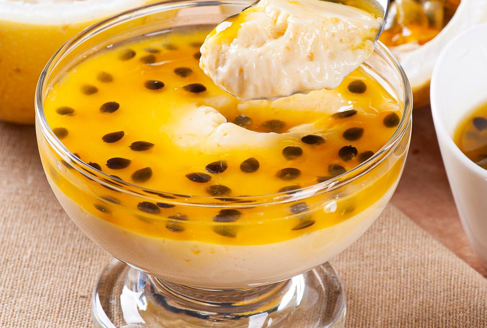

Sabe aquele bolo de cenoura com calda de chocolate que você comia quando crinça? Aquele bolo fofinho com calda crocante de chocolate... Que nostalgia né?! Segue o link abaixo essa receita deliciosa.
Bolo de Cenoura com Calda de Chocolate
Uma das sobremesas mais gostosas e fáceis que exite, uma mistura de texturas e sabores. Segue o link abaixo da receita dessa deliciosa Torta de Limão.
Torta de Limão
Crocante por fora e macio por dentro, essa é a descrição perfeita para essa receita de Brownie, segue o link abaixo dessa delícia.
Brownie
Cremoso, suave e azedinho, essa é a combinação perfeita para um Mousse de Maracujá perfeito! Segue abaixo o link desse receita.
Mousse de Maracujá Uma das tortas mais saborosas e fáceis de preparar. Assim como o sabor, sua história também é muito especial. Segue abaixo o link dessa magnífica Torta Alemã.
Torta Alemã